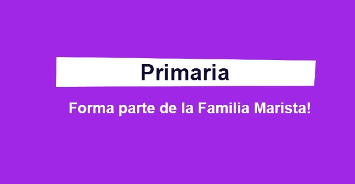

Nivel Inicial
El colegio Santiago Marista forma estudiantes capacitados y comprometidos con la fe y el conocimiento,
ofreciendo una infraestructura unica para los niños de Kinder con un parque privado y un patio, sin la
intervencion de los estudiantes de Primaria y Secundaria, al mismo timpo brindando la seguridad de
nuestros estudiantes.
Saber más

Primaria
El Colegio educa atravez del contexto de vida, del clima familiar y acogeder que se respiere, de las
relaciones interpersonales de calidad del esmerado cuidado con que los educadores atienden a las
necesidades de los estudiantes, ayuda a los estudiantes compementerse con si mismos, fortalenciendolos
para la vida
Saber más
Secundaria
El colegio Santiago Marista es un lugar excelente de educacion a la vida, al desarrollo cultural, a la
formacion profesional, al compromiso del bien comun, su finalidad es la educacion integral de la
persona. Atravez del proceso educativo, ayuda a los estudiantes compranden el presente e imaginen el
futuro de la sociedad y de la humanidad.
Saber más

Pastoral Educativa
Hoy atravez de la accion educativo pastoral de hermanos laicos se hace realida el anhelo de Champagnat
"No puedo ver a un joven sin decirle cuanto le ama a Jesus".
Los Maristas
Consideremos a la educacion como nuestro ambito priviligiado de evangelizacion y promocion humana. un
medio maravilloso para llevar a los niños, adolescentes y jovenes a la experiencia de la fe.
Marcelino Champagnat
No puedo ver a un niño o un joven sin sentir profundas ganas de gritarle lo hermoso que es vivir y el
gran amor que el Padre nos tiene.